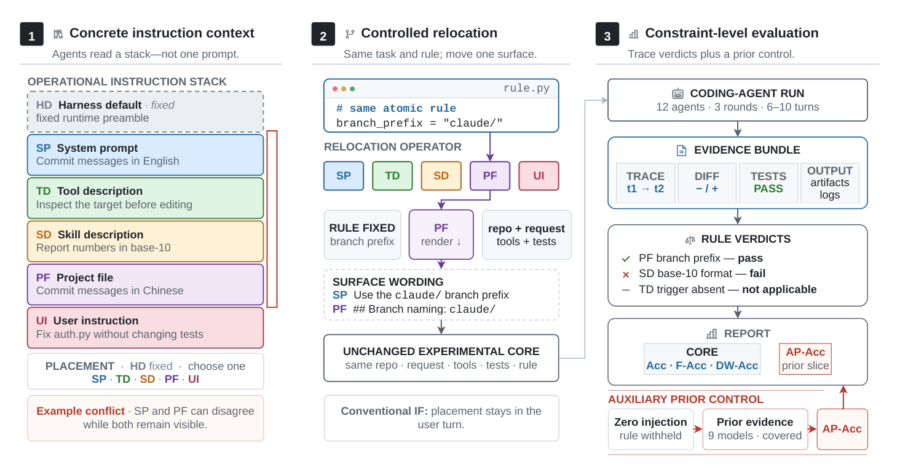
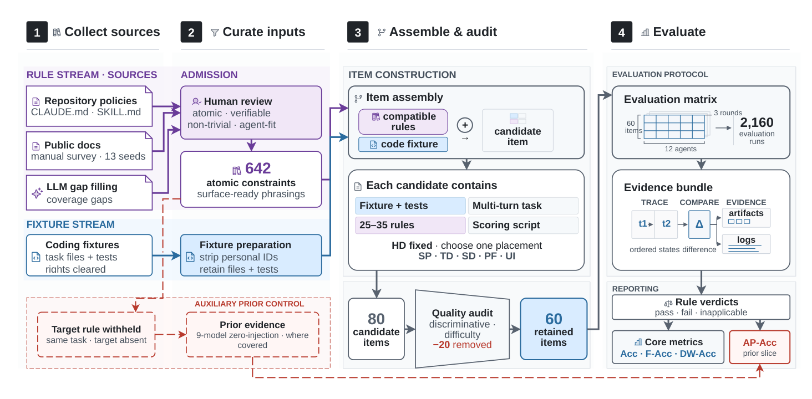
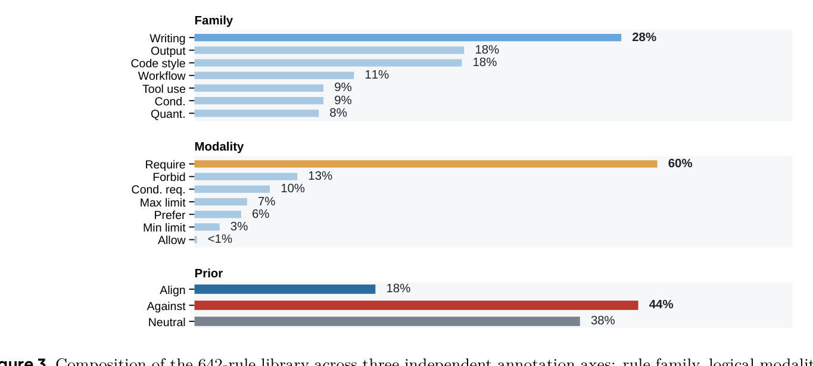
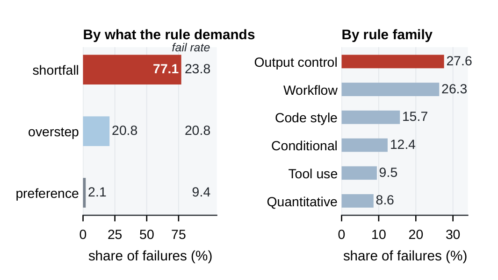
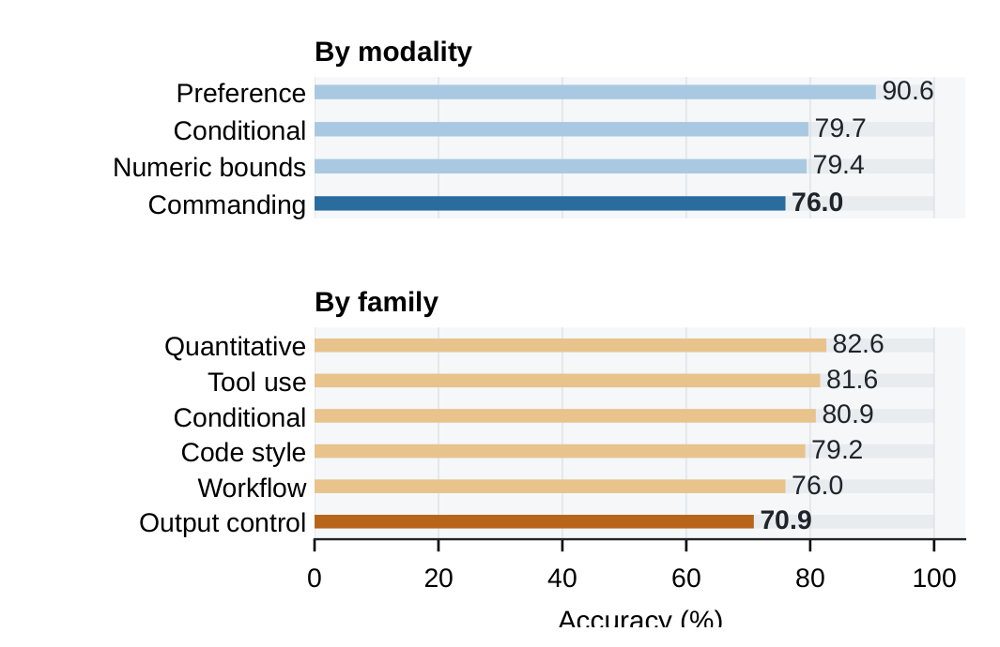
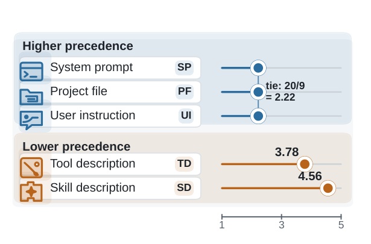
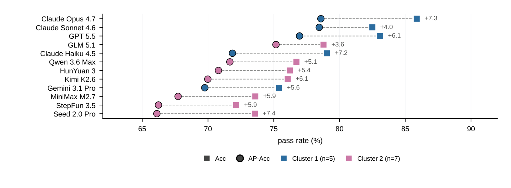

当一个编码agent遵守了一条规则，它可能只是本来就打算这么做。现有指令遵循基准无法区分这两种情况：它们把规则集中在用户回合里，而编码agent基准只强调最终任务成功。
ByteDance Seed的这篇Harness-IF从一个执行证据里逐条给操作性规则打分来破解这个难题：60个真实多轮编码条目、642条规则库、256条获得判定，落在agent会读取的5个可配置指令面上。并引入Against-Prior Accuracy（AP-Acc）：只给「违背默认倾向」的规则打分，从而把「遵从」从「巧合」里剥出来。
编码agent在检查代码库、编辑文件、跑命令、调用工具时，要在一摞指令下工作。关键难点是：agent遵守一条规则，可能只是因为它本来就会这么做、而非真在读被给的指令。现有两类基准各偏一端：指令遵循基准把规则集中在用户回合，编码agent基准只关心最终任务成败：都测不出这个区别。

本文想造一个能区分「遵从」与「巧合」的度量：不是问任务成没成、也不是问有没有「照做指令」的表面特征，而是逐条规则从执行证据判定它有没有被真正遵守。
遵循现代编码agent的通用配置，模型区分6个指令面：Harness Default（平台默认、用户部署中通常不可改）、System Prompt（系统开发者设定角色与通用行为）、Tool Description（描述工具及其用法）、Skill Description（描述可复用技能何时用、用什么规则）、Project File（项目级指令，如CLAUDE.md/CONTRIBUTING.md/AGENTS.md）、User Instruction（用户当前请求）。


这些面由不同方书写（平台、工具作者、项目维护者、用户），出现在prompt不同位置。大多数基准把面固定在用户指令；Harness-IF评估5个可配置面（SP、TD、SD、PF、UI）上特定约束被遵循得如何。
数据：约束是agent被要求遵守的某一具体规则，每条窄到能据执行证据判pass/fail/n.a.。从642条规则库（三批独立标注）构建：收集来源→组装与审计→选60个真实多轮编码条目→256条获得判定。
核心创新是AP-Acc。聚合准确率测的是「agent输出是否满足规则」，却淹没了两件事：即使不含规则、agent也可能遵守（巧合）；不同模型对同一条规则可能共享默认倾向。AP-Acc从反向切入：只给标记为「违背默认倾向」的规则打分。
怎么识别默认倾向？把任务重跑一遍、把该规则抽走（across nine probe builds），看agent原本会不会这么做；不会的才记为against-prior，其它情况人工整理。于是AP-Acc只评估「因为这条规则、agent才改变了行为」的那类规则：这正是「遵从」区别于「巧合」的证据。
顺带它还能纠正排名偏差：聚合分数会按模型特有的幅度高估遵从：此前控制让榜首模型不变、但交换了三对相邻排名。
在60个条目、256条判定规则、12个前沿模型上：准确率跨72.1-85.9%，AP-Acc跨66.1-78.6%。关键是：每个模型都在against-prior规则上更差，幅度3.6到7.4分（均值5.81），且这个方向在common-support分析（item-clustered区间）下依然成立。


这说明聚合分数确实高估了真实遵从度：agent「顺其自然」就能拿到的分，被算成了服从。按类别拆解，失败集中在「要求行动」的规则，命令与输出控制规则最难。
一个计数器平衡的冲突先导实验（nine separate builds）给出第二个结果：合并后的优先级并不遵循prompt深度。系统提示（SP）、项目文件（PF）、用户指令（UI）领先于工具描述（TD）与技能描述（SD）。

这挑战了「越靠近用户/越后出现越高优先」的朴素直觉：被agent当作最高约束的，往往不是离实际输出最近的指令，而是标明角色边界与项目契约的那几类。
Harness-IF把操作性指令遵循测量下沉到单条规则与交付面的粒度。它提供了统一度量框架：判断agent实际遵循了哪些操作规则、这些规则经哪条面送达、在真实工作流执行中存活得有多可靠。
核心主张简洁而有力：编码agent评估应该把指令遵从当作与任务成功不同的独立维度来测。用AP-Acc这样的prior-control度量，才能看清聚合分数掩盖的遵从差异。
图7把每个agent的Accuracy（方块）与AP-Acc（圆圈）按AP-Acc排序并列，直观展示聚合分与抗先验分之间的落差：所有模型在AP-Acc上都系统性低于Accuracy，印证「表面遵从」被高估的程度随模型而变。

参考：https://arxiv.org/abs/2608.11727